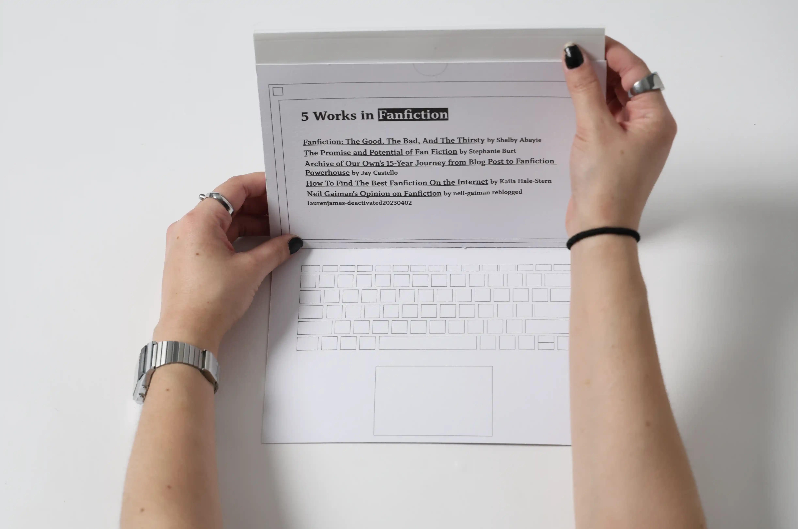
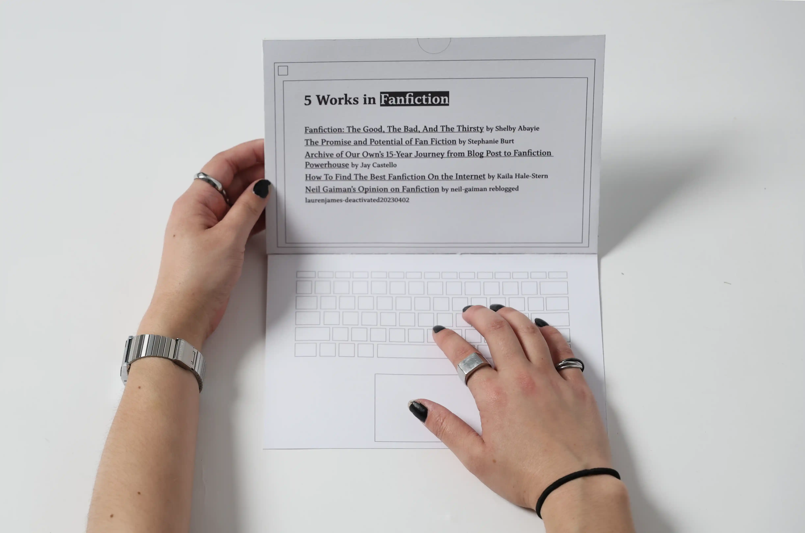
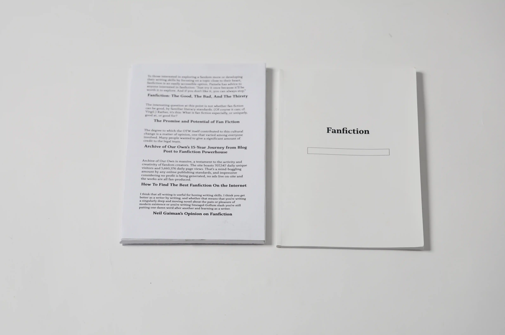
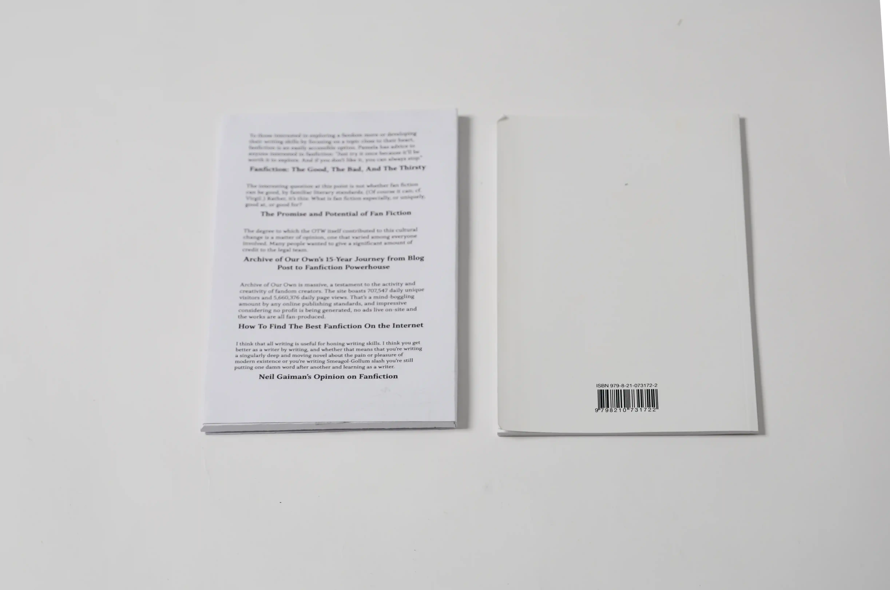
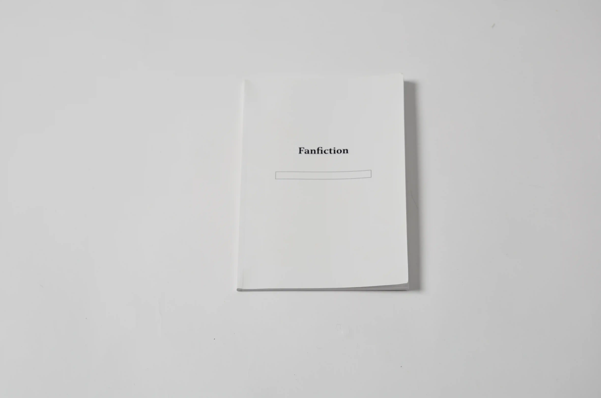
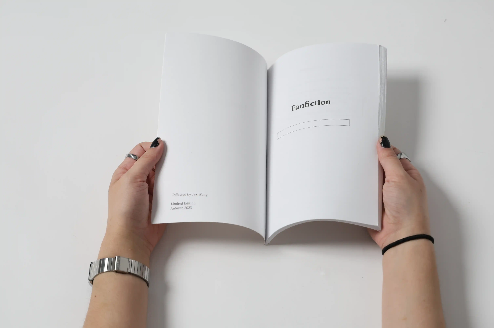
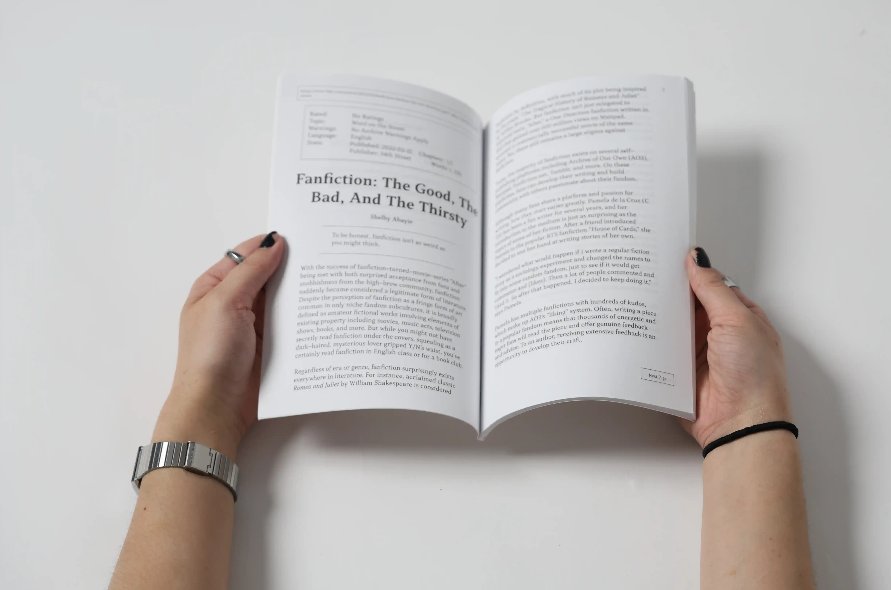
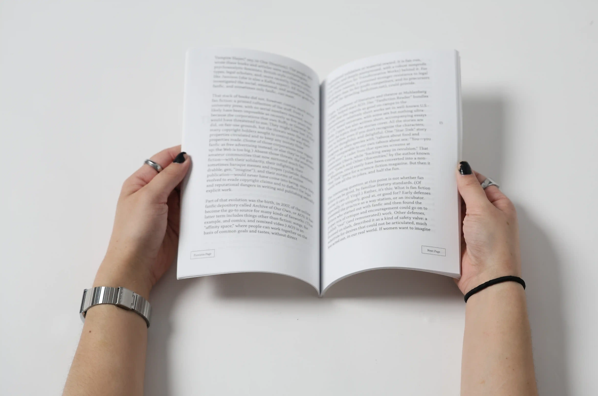
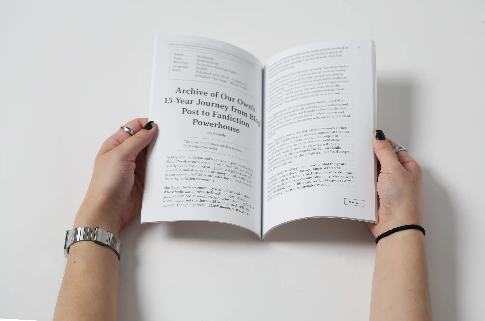
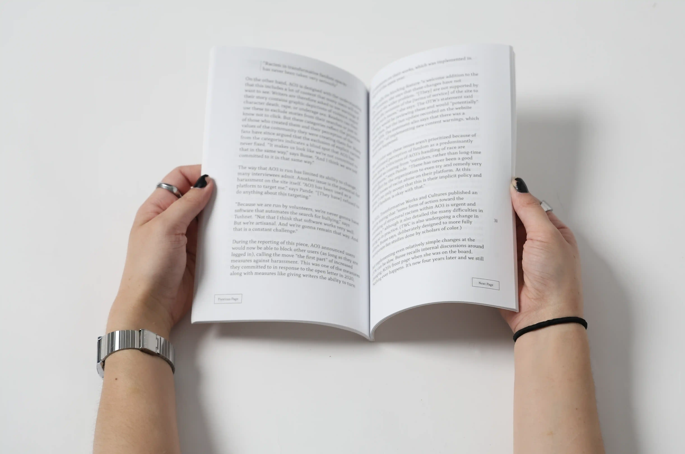

Networks of Distribution:
Fluxus and Design
This exhibition is to showcase the Fluxus move and eight of its core members.











This project is dedicated to my dear friend Cat, who introduced me to the wonderful world of fandom interactions and fanfictions.